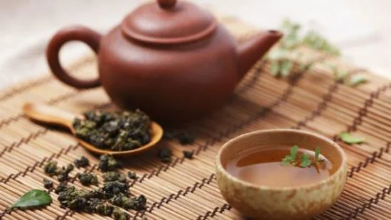
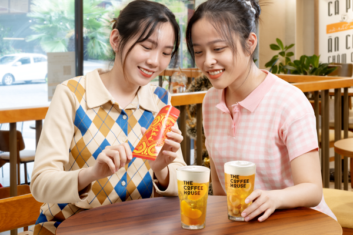
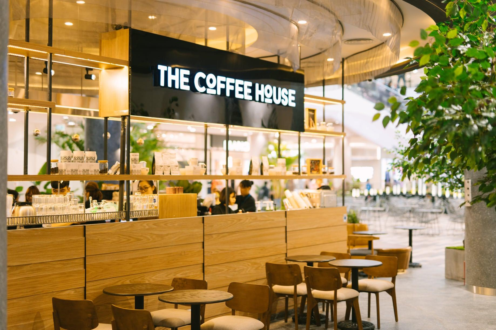

NHỮNG LOẠI TRÀ CÓ HƯƠNG VÀ VỊ “ĐỔ GỤC” KHÁCH THĂM XUÂN NHÀ BẠN
Tết đang “lấp ló đầu ngõ” và bạn đang chuẩn bị cho một năm mới an khang, sum vầy. Tìm kiếm
những thức trà,
thức bánh thật ngon để tiếp đãi khách đến thăm nhà. Nếu vậy, Nhà sẽ bật mí những loại trà có hương và vị “đổ
gục” những vị khách đến thăm xuân nhà bạn nhé!

NĂM MỚI, UỐNG "KHỞI ĐẦU SUNG"
Năm mới "khởi đầu sung" với bộ 3 trà Tết
Chia tay năm cũ với quá nhiều nốt trầm, Tết này hãy cùng The Coffee House nạp cho mình bộ 3 "Sung" gói trọn
tình cảm đong đầy, vừa ngon tròn vị vừa mang đến sự hứng khởi, tươi mới cho những ngày đầu năm để bắt đầu
năm Dần đầy năng lượng, mãnh liệt và đủ sức "công phá" mọi thử thách.

TRANH THỦ CƠ HỘI NHẬN LÌ XÌ KHỦNG TẠI "NHÀ"
Không chỉ được thưởng thức những "cực phẩm" Trà mùa Tết, The Coffee House còn lì xì riêng cho khách hàng khi
đến với "Nhà" bằng một món quà đặc biệt: Mua một ly trà Tết KHỞI ĐẦU SUNG, bạn sẽ được tặng thêm một ly tùy
chọn trong bộ ba Trà Sen Nhãn Sum Vầy, Trà Dưa Đào Sung Túc và Trà Sữa Sung Sức.

THE COFFEE HOUSE - QUÁN CÀ PHÊ LÝ TƯỞNG ĐỂ HỘI HỌP BẠN BÈ MÙA TẾT NÀY
Một chút thời gian còn lại của những ngày cuối năm, bạn muốn dành cho những người quan trọng
mà mình yêu quý, cùng họ chuyện trò và sẻ chia. Hay vào những ngày đầu năm, bạn muốn gặp họ đầu tiên, để
chúc cho những người bạn thương mến ngập tràn điều tốt đẹp nhất. Thế nhưng, bạn chưa tìm được một điểm hẹn
lý tưởng, tiện cho cả bạn và tiện cho cả đối phương. Là nơi bạn có thể nói tất cả mọi thứ, là nơi bạn có thể
thả mình, không phải lo nghĩ, là nơi để bạn thực sự tự do để thư giãn... Nếu vậy, mời bạn ghé Nhà nhé!
Với 146 cửa hàng phủ sóng trên khắp cả nước, dù bạn ở đâu, bạn cũng có thể tìm cho mình một không gian hẹn
hò trên cả tuyệt vời. Từ miền Bắc vào miền Nam, đâu đâu cũng là những không khí ấm áp và hiện đại của Nhà.
Tại Hà Nội, TP.Hồ Chí Minh, Đà Nẵng, Khánh Hoà, Hải Phòng, hay cả Huế, Nghệ An, Cần Thơ, Tiền Giang,... bất
kỳ đâu bạn cũng đến nhà thuận tiện nhất.
Chính vì có nhiều lợi thế như mặt bằng ở ngay trung tâm thành phố vừa tiện để vui xuân cùng gia đình, hò hẹn
cùng bạn bè. Mỗi tỉnh thành, mỗi quận đều có nhiều cửa hàng của The Coffee House, với mặt bằng rộng rãi,
thoáng mát, thiết kế hiện đại, cho bạn một không gian thoải mái và lý tưởng nhất. Đặc biệt, đội ngũ nhân
viên thân thiện của Nhà luôn hy vọng có thể chào đón và phục vụ bạn một cách chu đáo nhất.
Tết đến Xuân về, nên các cửa hàng của Nhà đang được trang trí với những sắc màu mới, một không khí vừa ấm
áp, vừa tươi vui để đón bạn tới sẻ chia những câu chuyện cuối năm, đầu năm. Những không gian bài trí mang
đầy sắc xuân, vừa cho bạn những tấm hình thật “chill”, thật chất, lại đầy sức sống. Bên cạnh một không gian
rực rỡ để hòa chung không khí rộn ràng của mùa xuân mới, The Coffee House còn tung ra menu Tết hấp dẫn và ấn
tượng. Bộ ba “Khởi đầu Sung” nhân dịp Tết Nhâm Dần này của Nhà gồm có Trà Sen Nhãn Sum Vầy, Trà Dưa Đào Sung
Túc và Trà Sữa Masala Chai Sung Sức. Đều là những hương vị tươi mát, cùng bạn bổ sung năng lượng và khơi
mạch cảm xúc cho những câu chuyện đầu năm.
Đặc biệt hơn, nhân dịp xuân mới 2022, Nhà lại đang có chương trình cực hot - MUA 1 TẶNG 1. Chương trình áp
dụng cho bộ ba “Khởi đầu Sung” nóng hổi vừa mới ra lò của The Coffee House. Như vậy là khi bạn mua một “Sum
Vầy” sẽ được tặng thêm một “Sum Vầy”, khi bạn đón “Sung Túc” lại càng thêm “Sung Túc”, khi bạn “Sung Sức”
thì lại nhân đôi “Sung Sức”. Một khởi đầu năm mới thật bốc từ Nhà đúng không! Đây chính là một món quà ý
nghĩa mà Nhà dành tặng bạn, chúc cho bạn một năm Hổ thật Sung Sức, Sung Túc và luôn vui Sum Vầy.
Chương trình đặc biệt thế này hãy cùng hội tâm đầu ý hợp của bạn đến để rinh quà và rước lộc nhé. Đừng quên
lan tỏa đến bạn bè, người thân của bạn để cùng đón một năm mới thật “sung”, thật năng lượng, đầy hứng khởi
và may mắn. Bước vào một năm thật thành công và viên mãn.